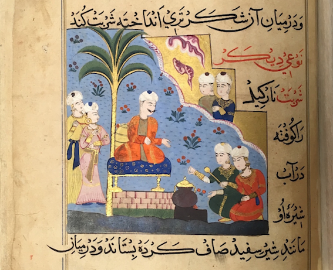

Sharbat

Description
This recipe for sharbat or sherbet, a refreshing drink, comes from the late fifteenth-century Ni'matnama manuscript, also known as the Sultan's Book of Delights. Compiled under Ghiyath Shah, Sultan of the Malwa Sultanate in Central India, and, later his son Nasir Shah, this manuscript contains recipes for a range of culinary delicacies, as well as perfumes and medicines. The illustrations that accompany the recipes occasionally depict the Sultan himself observing the cooking process, as shown above. Recipes for sharbat abound in the manuscript, with variations featuring ingredients like wild dates, jackfruit, mango, and pomegranate. This recipe, drawn from Norah M. Titley's English translation of the manuscript, is one of the more detailed variants, a recipe for lime sharbat. See the bottom of this page for a note on units of measurement.
Ingredients
- 4 sīrs of potherb juice
- 1 sīr of lime juice
- 1/2 a tūlcha of saffron
- 1/4 of a māsa each of:
- nutmeg
- cinnamon
- spikenard
- cloves
- tagrī
- 2 rattīs of musk
- 2 rattīs of camphor
- 1 māsa of white ambergris
Method
- Grind and sift the specified measures of nutmeg, cinnamon, spikenard, cloves, tagrī, musk, camphor, and white ambergris. Set aside.
- Combine the potherb juice and the lime juice and "cook...slowly over the fire until soft" and "thickened."
- Add the nutmeg, cinnamon, spikenard, cloves, and tagrī to the juice. Stir.
- Add the musk, camphor, and white ambergris. Stir.
- Once the mixture has come together, "[k]eep the sherbet in a stone receptacle and drink it whenever it is required."
Notes
- Potherb
- Potherbs refer to a variety of edible plants whose leaves, flowers, and/or stems are used in cooking.
- Tagrī
- According to the glossary in Titley's translation, tagrī is a "fragrant powder."
- Units of Measurement
- Measurements were not standardized in this period, but nineteenth-century conversions provide some impression of the relative quantities of ingredients required for this recipe:
- 8 rattīs=1 māsa=15 troy grains
- 12 māsas=1 tola or tūlcha =180 troy grains (the weight of a one rupee coin)
- 80 tolas=1 sīr=2 1/2 lbs troy
- 40 sīrs=1 mān=100 lbs troy